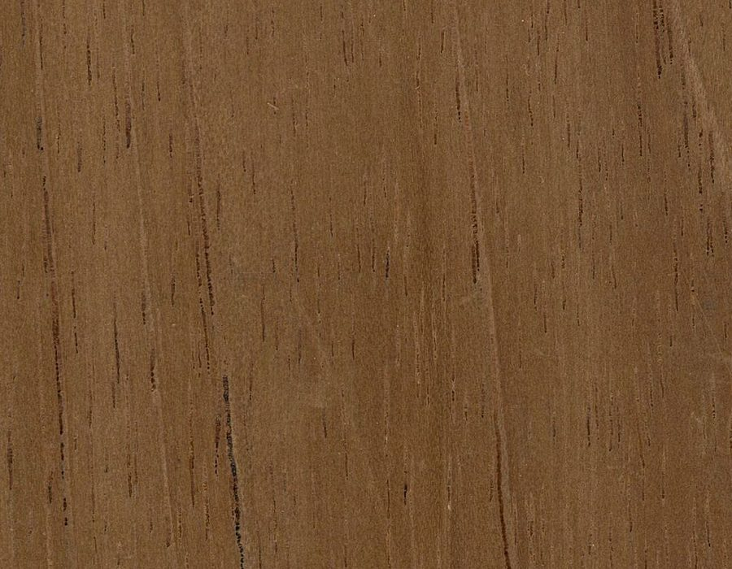

Maderas nativas argentinasN.º 5
Cedro misionero
Cedrela fissilis · Meliáceas

- Otros nombres
- Cedro; ygary en Paraguay
- Dónde crece
- Misiones y Corrientes; también citado en Salta, Jujuy, Catamarca y Córdoba
- Color
- Rosado a castaño rojizo; perfumada
- Peso
- 470 a 610 kg/m³; flota
- Dureza
- Blanda
- Durabilidad
- Moderada; se pudre enterrada
- En el taller
- Fácil; la resina empasta la sierra
- Protección
- CITES, Apéndice II (2020); UICN: vulnerable
Su perfume le dio el nombre de cedrosoydemadera.com